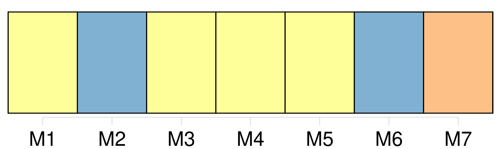
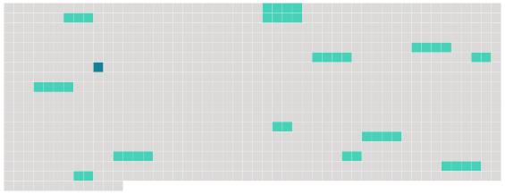

Longueur nb maillons : 14 mentions |
  |
Tout différend entre des parties contractantes relatif à l'interprétation ou à l'application de la convention, et qui n'aura pu être réglé par [les parties au différend] par un autre moyen tel que l'enquête ou une conciliation au sein de la Commission, est, à la requête de l'une de [ces parties contractantes] , soumis à arbitrage dans les conditions fixées au présent article. [1 phrases]
À moins que [les parties au différend] n'en disposent autrement, la procédure d'arbitrage visée au paragraphe 1 est conduite conformément aux paragraphes 3 à 10. [6 phrases] Le tribunal arbitral est composé de trois membres : chacune [des parties au différend] nomme un arbitre ; les deux arbitres ainsi nommés désignent d'un commun accord le troisième arbitre, qui assume la présidence du tribunal.
Ce dernier ne doit pas être le ressortissant de l'une [des parties au différend] ni avoir sa résidence habituelle sur le territoire de l'une de [ces parties] , ni se trouver au service de l'une d' [elles] , ni s'être déjà occupé de l'affaire à aucun titre. [2 phrases] b ) Si, dans un délai de deux mois après la réception de la requête, l'une [des parties au différend] ne procède pas à la nomination d'un arbitre, l'autre partie peut saisir le président de la Cour internationale de justice, qui désigne le président du tribunal arbitral dans un nouveau délai de deux mois. [9 phrases]
Il peut, à la demande d'une [des parties] , recommander les mesures conservatoires indispensables. [1 phrases]
d ) [Les parties au différend] fournissent toutes les facilités nécessaires pour la conduite efficace de la procédure. [2 phrases] Sauf si le tribunal arbitral en décide autrement en raison des circonstances appropriées à l'affaire, les frais de justice, notamment la rémunération des membres du tribunal, sont assumés à parts égales par [les parties au différend]
Le tribunal tient un registre de toutes ses dépenses, et remet un état final de celles -ci [aux parties] [4 phrases]
Elle est définitive et obligatoire pour [les parties au différend]
b ) Tout différend qui pourrait surgir entre [les parties] concernant l'interprétation ou l'exécution de la sentence peut être soumis par la partie la plus diligente au tribunal arbitral qui l'a rendue ou, si ce dernier ne peut en être saisi, à un autre tribunal arbitral constitué à cet effet de la même manière que le premier. |
 |
La ressource peut être téléchargée sur la page Ortolang
Si vous avez des questions ou vous voyez des erreurs, merci d'envoyer un mail à silvia.federzoni89@gmail.com
Site développé par S. Federzoni (contact)